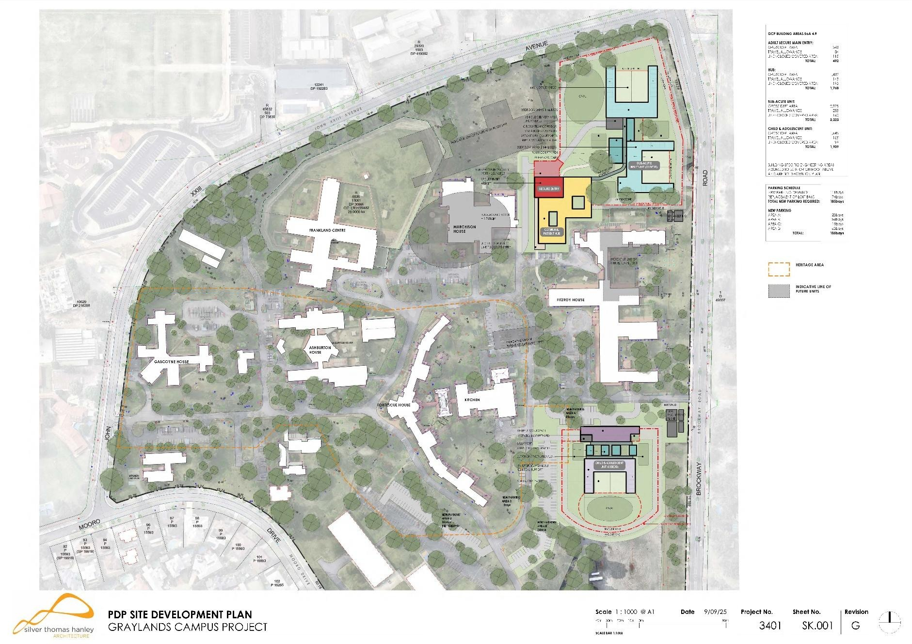
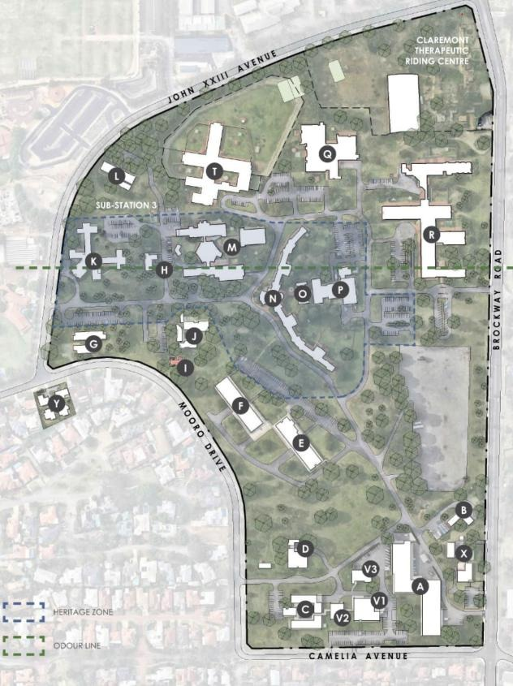
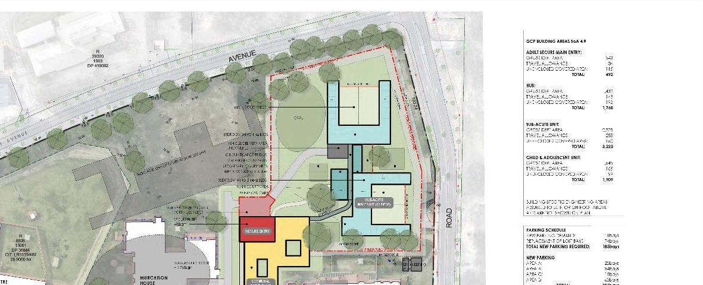
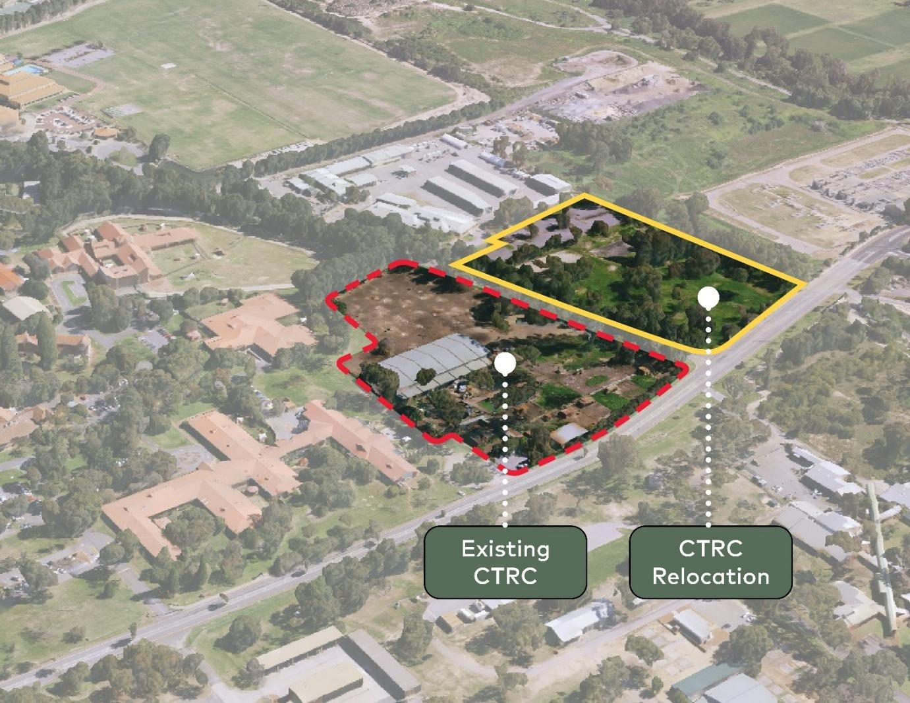
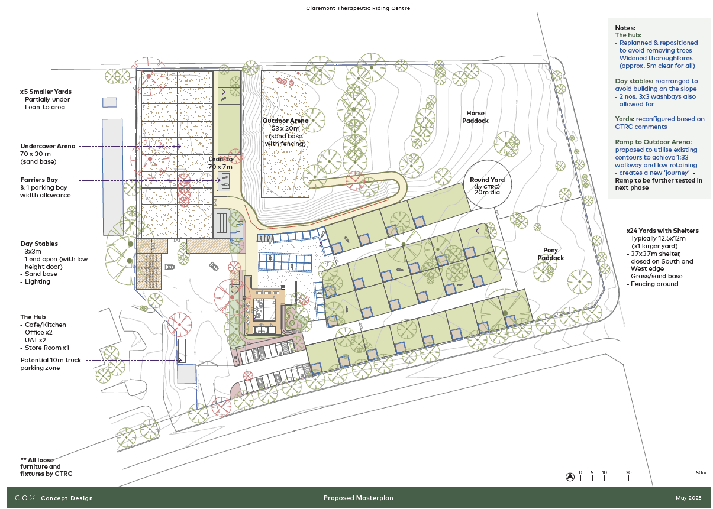
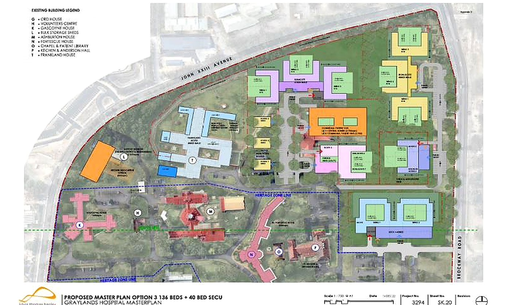
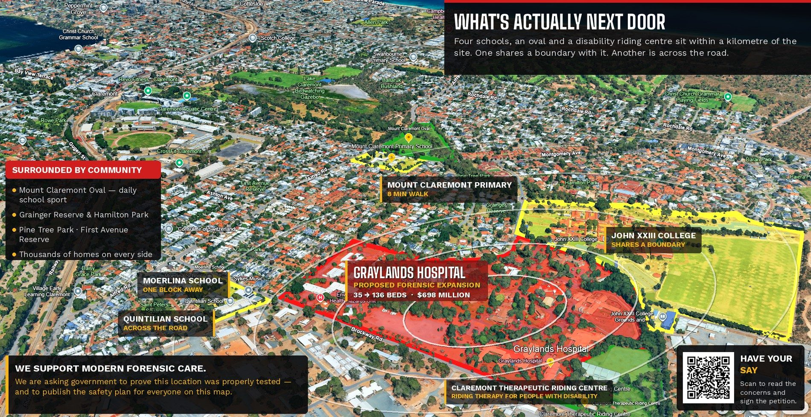
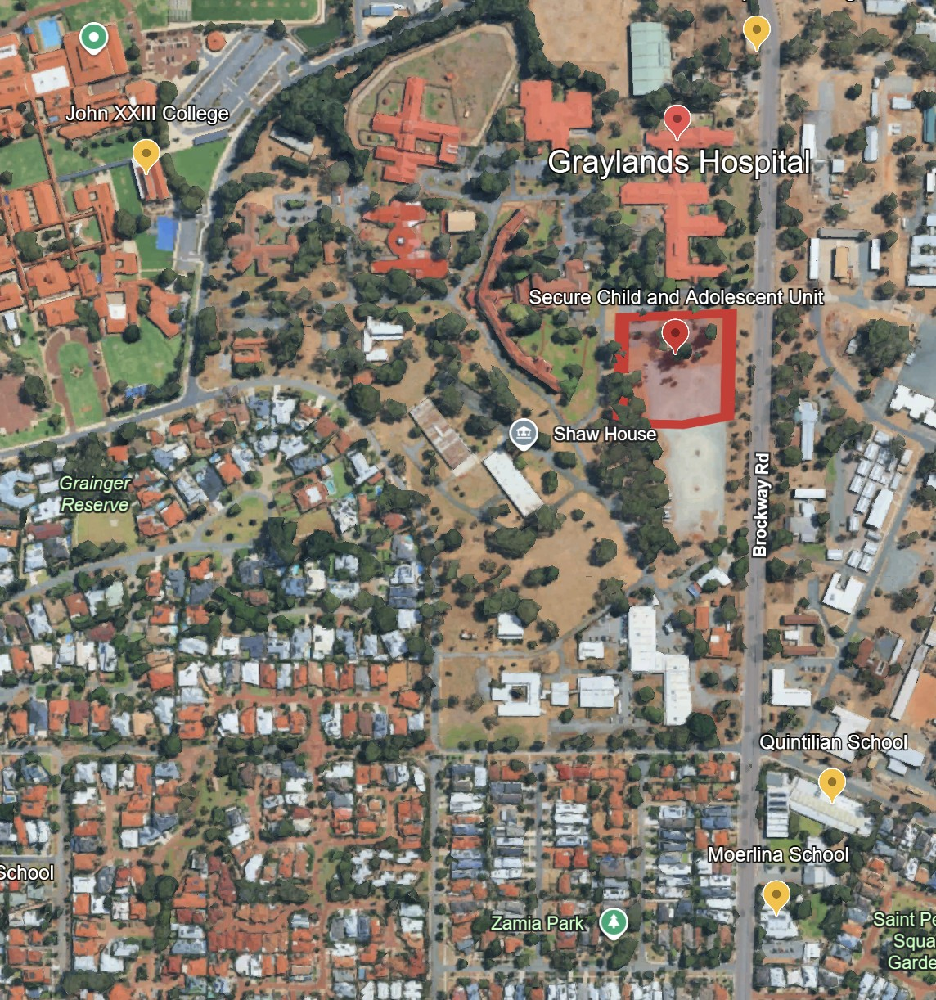

What's actually being built, and when
Not a rendering, not a rumour. The real architectural drawings, the government's own scale diagram, the published construction schedule, and the first physical work already on the ground — collected here as they're published, with sources for every claim.

This is a living page. It will grow as more plans, drawings and dated evidence become available — each addition sourced and dated like everything else on this site. Last built: 5 September 2026.
Sources: EOI, Oct 2025 (Stage 1 scope and 2028 date); Infrastructure WA, Mar 2023 (full 176-bed vision and $698.3M).
What's being built, and where
The plan at the top of this page is the site development plan the State issued to construction companies bidding to build Stage 1 — the first time the actual building footprints, not just bed numbers, have been made public. Set against what's there today, two things stand out.

What's there now
The current hospital layout — the Frankland Centre, heritage-listed houses, and, marked in green, an odour line running through the site. More on that below.

A named, mapped Child and Adolescent Unit
The building schedule lists the Child and Adolescent Unit as its own line item, with its own footprint inside the cluster of new buildings. The red dashed line is a secure perimeter enclosing the Adult Secure Main Entry, the Hub, the Sub-Acute Unit and the Child and Adolescent Unit as one fenced zone.
This image is reproduced at the resolution available in the published tender document — the official record, not a rendering issue on our end. Some labels are legible only in parts.
Source: EOI Schedule 2, Parts A & B. Some smaller area figures on the original building schedule are too small to read reliably even at full resolution; we haven't guessed at them.
The rest of the Stage 1 works
The tender also covers relocating the Claremont Therapeutic Riding Centre — which currently sits inside the footprint of the new build — to a new site across John XXIII Avenue.

Existing CTRC → relocation site
The riding centre — which provides therapy for people with disability — has to move to make room for the new build. Its replacement site sits across John XXIII Avenue, on what is currently open land.

The relocation concept design
Stables, an undercover arena, an outdoor arena and paddocks — a full replacement facility, concept-designed in May 2025. As of the governance timeline on the issue page, this relocation was not yet under way as at August 2026.
How big the full vision is
The tender above covers Stage 1 only — the 40-bed slice that's actually funded. The diagram below is different: it's the State's own original masterplan option for the entire northern campus, submitted to Infrastructure WA in December 2022 as part of the business case IWA reviewed in March 2023. It's the clearest single image of what "176 beds" actually looks like on the ground.

Proposed Master Plan Option 3 — 136 + 40 beds
Silver Thomas Hanley Architecture, drawing SK.20, 14 December 2022 — the option Infrastructure WA assessed and recommended proceed to a funding decision, in stages, the following March. Only the smaller Stage 1 slice shown above has actually been funded so far.
Reproduced at the resolution available in Infrastructure WA's published assessment report — the best publicly available copy, not a rendering issue on our end. The overall layout and zones are clear; some small in-block labels are not.
A flagged risk that predates this campaign: Infrastructure WA's own assessment noted that "substantial redevelopment" on this site falls within the Subiaco wastewater treatment plant odour buffer, and recommended the impacts and mitigations be clearly set out before a funding decision. The same odour line is marked on both this 2022 masterplan and the existing site plan further up this page — we haven't been able to confirm whether the recommended assessment was ever published.
Source: Infrastructure WA, Major Infrastructure Proposal Assessment, March 2023
What's already there
The plans above sit inside an established, densely used neighbourhood — not a buffer zone. This is the same annotated aerial from the homepage, for reference alongside the plans on this page.

How close is close: the Child and Adolescent Unit
The school-boundary page above talks about the campus in general. This is about one specific, secure, fenced unit — and how close it sits to a school with around 160 young children.

That's a fenced, secure unit for children and adolescents under a custody order, roughly 400 metres from a school gate. The perimeter shown isn't incidental — it's there because of who the unit is designed to hold, at a security level the government itself has classified as requiring a dedicated fenced boundary within the wider site.
The published timeline
Two different processes, on two different clocks: the political/funding timeline already covered on the issue page, and the construction procurement timeline below, drawn from the tender documents themselves.
Sources: EOI, Oct 2025; Infrastructure WA, Mar 2023. The EOI can't name the winning contractor since it predates selection, but the scope and dates line up closely with the ADCO engagement above.
On the ground now
3 September 2026 — a resident stopped to speak with a work crew carrying out electrical infrastructure work at the John XXIII Avenue boundary of the site. Asked what it was for, the crew confirmed it was for the proposed development.
It's the first physical sign most residents have seen with their own eyes — and it lines up with the EOI's own Q2 2026 target for site works to begin. If you see similar activity, tell us at mtclaremontcommunity@gmail.com. This page will carry dated sightings as they're reported and confirmed where possible.
What the government's own tender says about community reaction
"Stakeholders – deliver the Project engaging proactively and positively with the community without causing any adverse stakeholder reaction."
One of seven listed project objectives, alongside quality, schedule, cost and safety. Source: EOI, Section 2.3
Read plainly, the objective isn't to seek community agreement — it's to avoid a negative reaction becoming a delivery risk. That's a reasonable thing for a construction schedule to worry about. It's a different thing from genuine consultation, which is the entire basis of this campaign's ask.
If seeing the actual plans changes how "176 beds" or "$698 million" lands for you, the petition is the fastest way to register that.
Sign the petition